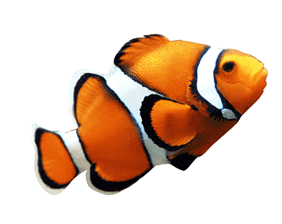

CLOWN FISH
Clownfish or anemonefish are fishes from the subfamily Amphiprioninae in the family Pomacentridae. Thirty species of clownfish are recognized: one in the genus Premnas, while the remaining are in the genus Amphiprion. In the wild, they all form symbiotic mutualisms with sea anemones.